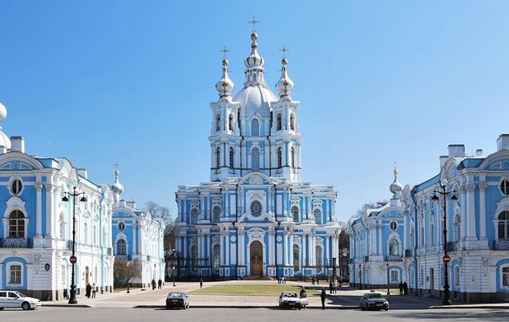
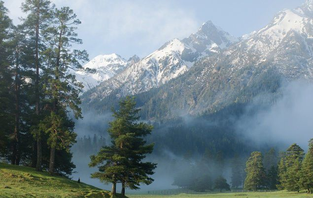
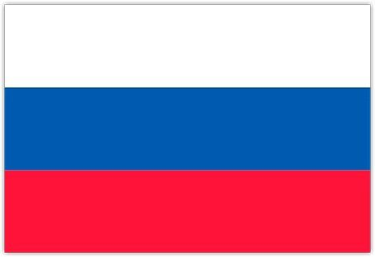
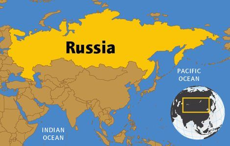
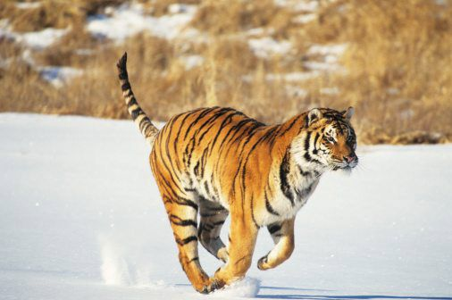
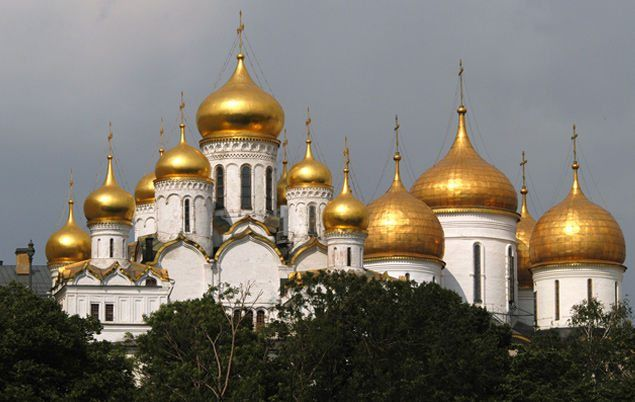

History

The earliest human settlements in Russia arose around A.D. 500, as Scandinavians moved south to areas around the upper Volga River. These settlers mixed with Slavs from the west and built a fortress that would eventually become the Ukrainian city of Kiev.
Kiev evolved into an empire that ruled most of European Russia for 200 years, then broke up into Ukraine, Belarus and Muscovy. Muscovy’s capital, Moscow, remained a small trading post until the 13th century, when Mongol invasions in the south drove people to settle in Moscow.
In the 1550s, Muscovite ruler Ivan IV became Russia’s first tsar (Russian emperor) after driving the Mongols out of Kiev and unifying the region. In 1682, Peter the Great became tsar at the age of just ten, and for 42 years he worked to make Russia more modern and more European.
Geography and Landscape

As the world’s largest country, Russia occupies one-tenth of all the land on Earth. It spans 11 time zones across two continents (Europe and Asia) and has shores on three oceans (the Atlantic, Pacific and Arctic Ocean).
The Russian landscape varies from sandy and frozen deserts, tall mountains to giant marshes. Much of Russia is made up of rolling, treeless plains called “steppes”. The region of Siberia, which occupies three-quarters of Russia, is dominated by sprawling pine forests called “taigas”.
Russia has around 100,000 rivers, including some of the longest and most powerful in the world. It also has many lakes, including Ladoga and Onega (Europe’s two largest lakes), and Lake Baikal, which contains more water than any other lake on Earth.
Russian Flag

Map of Russia

Wildlife and Nature

As Russia is so huge, it’s no surprise that this incredible country is home to a large number of ecosystems and different species. Its forests, steppes and tundras provide habitat for many rare animals, including Asiatic black bears, snow leopards, polar bears, and small, rabbit-like mammals called pikas.
Russia’s first national parks were set up in the 19th century, but decades of unregulated pollution have taken a toll on many of the country’s wild places. To help protect and restore the country’s natural beauty, strict nature reserves have been established, known as zapovedniks.
Russia’s most famous animal species is the Siberian tiger, the largest cat in the world. Indigenous to the forests of eastern Russia, these endangered giants can grow to over 3m long, and weigh up to 300kg. How’s that for a big cat?!
People and Culture

There are about 120 ethnic groups in Russia who speak more than a hundred languages. Roughly 80 percent of Russians trace their ancestry to the Slavs who settled in the country 1,500 years ago. Other major groups include Tatars, who came with the Mongol invaders, and Ukrainians.
Russia is known all over the world for its thinkers and artists, including writers like Leo Tolstoy and Fyodor Dostoevsky, composers such as Pyotr Ilyich Tchaikovsky, and ballet dancers like Rudolf Nureyev.
Economy and Government
Russia’s history as a democracy is short. The country’s first election, which took place in 1917, was quickly reversed by the Bolsheviks, and it wasn’t until the 1991 election of Boris Yeltsin that democracy took hold.
Russia is a federation of 86 republics, provinces, territories and districts, all controlled by the government in Moscow. The head of state is a president elected by the people. The economy is based on a vast supply of natural resources, including oil, coal, iron ore, gold and aluminium.
Kremlin Moskow

This place is the heart of Moscow with its rich history, home to the Tsars (Russian nobility) for centuries (before Peter the Great moved it to Saint Petersburg). Among the interesting things inside the Kremlin are the Tsar Cannon, the Tsar Bell, beautiful cathedrals where the tsars were crowned and buried, and the Soviet-era Kremlin Palace (the former Congress Palace).
Red Square and St. Basil's Cathedral, Moscow

Red Square is located next to the Kremlin and is the most famous place in Russia worldwide, especially Saint Basil's Cathedral and Lenin's Mausoleum. The word 'red' means beautiful in Old Russian, and just from its name, it already describes its attractive appearance.
Cathedral of Christ the Savior

This church has a tragic fate and has become a symbol of Russia's entire history in the 20th century. Built in the mid-19th century in the Byzantine style, the cathedral was demolished by the Soviet government in 1931. A swimming pool was built on the site, but in the 1990s the cathedral was rebuilt, and it now serves as a major place of worship for the Russian Orthodox Church.
Luzhniki Stadium, Moscow

This stadium was the main venue for the legendary 1980 Summer Olympics. Many Russians remember how the Olympic mascot, Mishka the Bear, flew into the sky above the stadium. Russians always miss the Olympics because that moment was full of unforgettable celebrations, and for the first time, they got to meet foreigners.
Stalin's 'Seven Sisters' Skyscraper, Moscow

The sad news is, nowadays no one in Russia calls them the Seven Sisters or 'Seven Sisters' – because they're just vysotki (высотки, literally means tall buildings). Only a few people in Moscow can tell each of these 'Seven Sisters' apart, but they definitely know which one is the Moscow State University building.